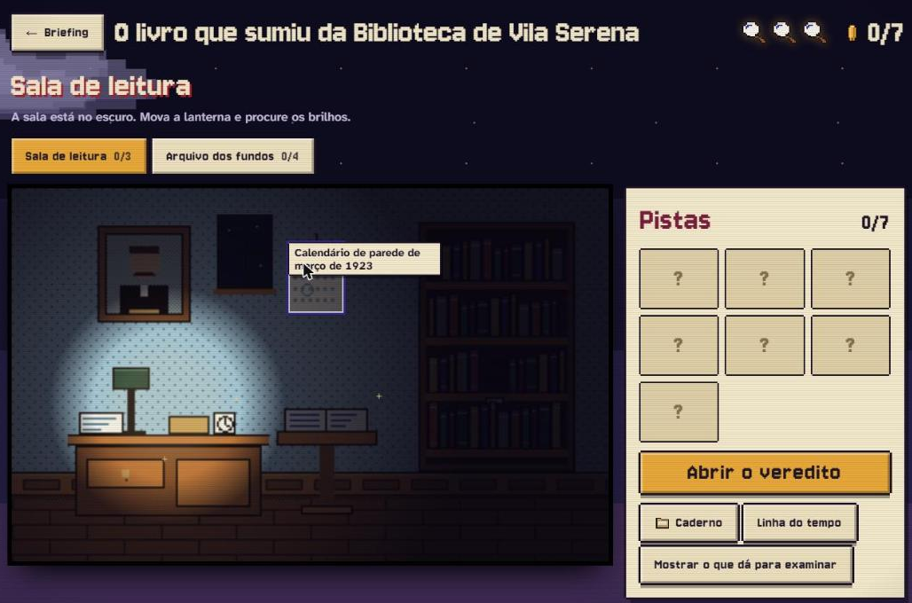
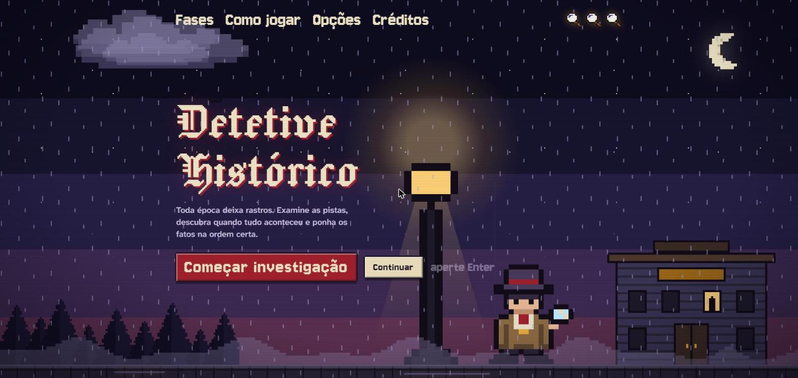
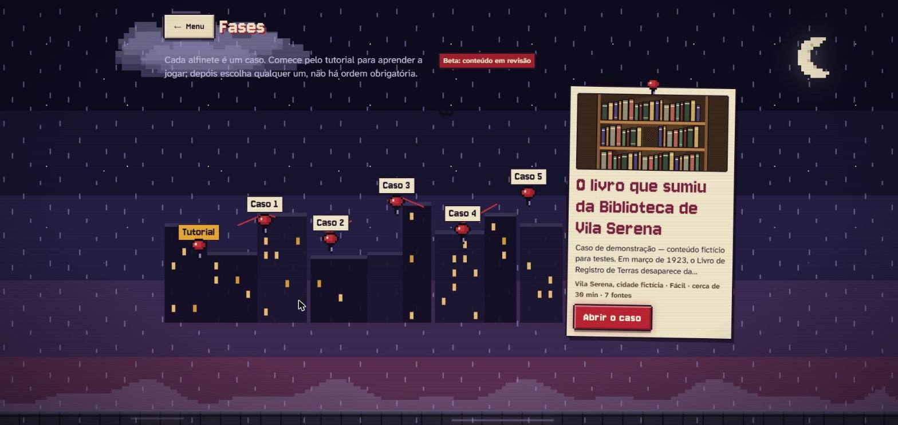
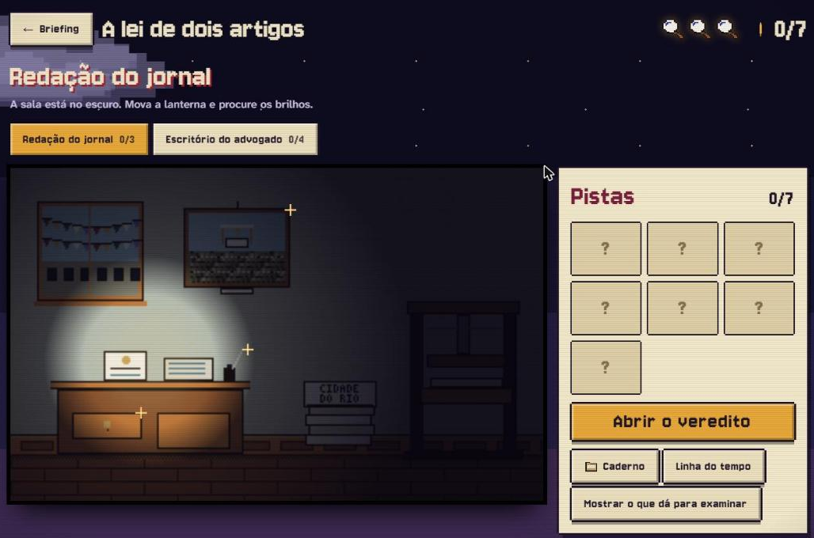
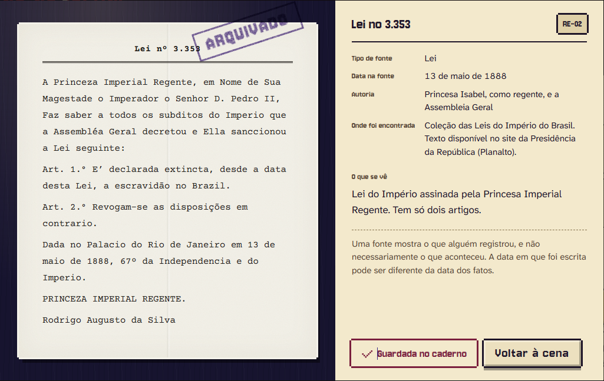

Toda época deixa rastros. Um jogo de investigação para aprender História analisando fontes.

Jogue agoraAponte a câmera do celular
Sumário
01 · O que é o projeto
Uma moeda de ouro
indica: exploração do ouroUma carta reclamando de impostos
indica: revolta com a cobrançaO desenho de uma forca
indica: repressão aos envolvidos02 · Como nasceu a ideia
Datas importam, mas o ensino não pode parar nelas. Queríamos que o aluno interpretasse documentos e concluísse a partir de evidências.
A partir das primeiras pistas
Confrontando as fontes encontradas
Indicando as fontes que a sustentam
03 · Benchmark e trabalhos correlatos
Nenhum dos analisados reúne, ao mesmo tempo:
Fontes históricas primárias
Investigação em cenas
Navegador, sem instalação
História do Brasil e Geral
Painel e relatórios para o professor
04 · Diagramas · modelo conceitual (simplificado)
narrativa e pergunta
evento a ordenar
época e ordem
ambiente explorável
notas e hipóteses
estrelas e medalhas
elemento da cena
autoria, data e procedência
tem
ordenados no
gera
tem
contém
revela
vai para o
04 · Diagramas · fluxo de uma partida
01
Tela inicial do jogo
02
Escolha do caso no mapa
03
Narrativa e pergunta do caso
04
Explorar objetos e encontrar fontes
05
Fontes, anotações e hipóteses
06
Ordenar e relacionar as evidências
07
Situar a época e confirmar a ordem
08
Contexto histórico e medalhas
06 e 07 são o raciocínio histórico do jogo
05 · Telas do jogo


05 · Telas do jogo · A lei de dois artigos


Transcrição do original
+ ficha: tipo, data, autoria e procedência
06 · Dificuldades
07 · Pontos positivos
Seis casos jogáveis no navegador, sem instalação.
O caso da abolição usa documentos de época.
134 testes automatizados e um defeito real no CT10.
Cada mudança de regra tem o motivo anotado.
Caso encerrado.
Toda época deixa rastros. No Detetive Histórico, o aluno aprende a segui-los.
BrunoAntônioNicolasDaniel
Jogue agora
Investigar, não decorar
Solução só no servidor
Navegador, sem instalação